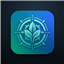

Plan de recuperación, ejercicio y alimentación · 31 julio – 31 diciembre 2026
Sincroniza tus datos con Dropbox para acceder a tu plan desde cualquier dispositivo.
Objetivo: de 85,2 kg a 72 kg (171 cm, 53 años) de forma progresiva hasta el 31 de diciembre — un ritmo de aproximadamente 0,5-0,6 kg/semana, considerado saludable.
Estimación orientativa: unas 1.800-2.000 kcal/día suelen generar ese ritmo de pérdida combinado con el ejercicio del plan. Es una referencia general, no una prescripción — coméntalo con tu médico o un dietista, sobre todo porque estás medicado para la hipertensión.
Principios generales
Menú semanal orientativo (se repite cada semana, puedes rotar los días entre sí)
| Día | Desayuno | Comida | Cena |
|---|
Snacks entre horas: fruta, un puñado de frutos secos naturales sin sal, o un yogur natural.
Antes de empezar
Rutina diaria recomendada (5-10 min, se puede hacer cualquier día, incluido fin de semana)
Evita por ahora
Registro del día
Historial
Registro del día
Historial
Nota del día
Notas anteriores
Evolución de Peso y Dolor Lumbar
Tensión Arterial
Hábitos (Agua y Sueño)
Cuidado Personal
Ejercicio